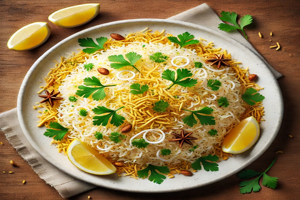

Poha Recipe

Ingredients
- 2 cups flattened rice (poha)
- 1 tablespoon oil
- 1 teaspoon mustard seeds
- 1 onion, finely chopped
- 2 green chilies, finely chopped
- 1/4 teaspoon turmeric powder
- Salt to taste
- 1/4 cup peanuts
- 1 tablespoon lemon juice
- 2 tablespoons chopped coriander leaves
Steps to Prepare
- Rinse the flattened rice in water and drain it. Set aside.
- Heat oil in a pan and add mustard seeds. Let them crackle.
- Add chopped onions and green chilies. Sauté until the onions are translucent.
- Add turmeric powder and salt. Mix well.
- Add the rinsed flattened rice and peanuts. Stir to combine.
- Cook for a few minutes until everything is heated through.
- Remove from heat and add lemon juice and chopped coriander leaves. Mix well.
- Serve hot and enjoy your flavorful Poha!